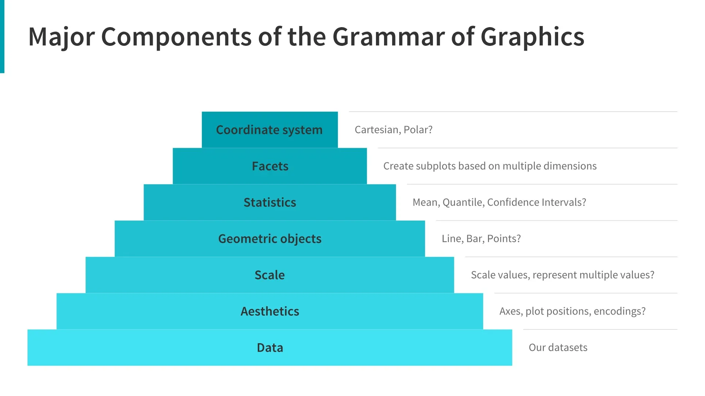
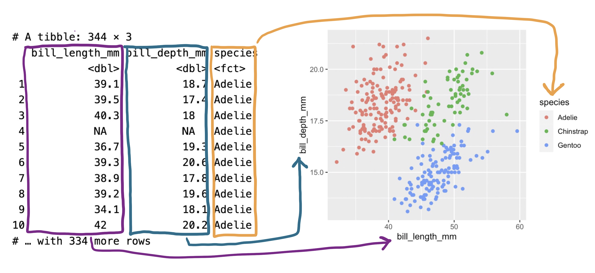

#| echo: false
#| autorun: true
#| fig-width: 10
#| fig-height: 5
intro_p <- penguins |>
drop_na() |>
ggplot(mapping = aes(x = flipper_length_mm, y = body_mass_g)) +
geom_point(mapping = aes(color = species, shape = species)) +
geom_smooth(method = "lm", formula = y ~ x) +
labs(
title = "Body Mass and Flipper Length",
subtitle = "Dimensions for Adelie, Chinstrap, and Gentoo Penguins",
x = "Flipper Length (mm)",
y = "Body Mass (g)",
color = "Species",
shape = "Species"
)
intro_pData Visualization
The Grammar of Graphics with ggplot2
This week’s lecture:
or continue on to the next pages for lecture notes.
Introduction
“The simple graph has brought more information to the data analyst’s mind than any other device.” — John Tukey
R has several systems for making graphs, but ggplot2 is one of the most elegant and most versatile.
ggplot2 implements the grammar of graphics, a coherent system for describing and building graphs. With ggplot2, you can do more and faster by learning one system and applying it in many places.
This presentation is based on the Data Visualization chapter of the R for Data Science book by Hadley Wickham and Garrett Grolemund.
In this tutorial, we will create this plot:
The Grammar of Graphics
In 1999, a statistician named Leland Wilkinson published the first edition of what has been the most influential work in data visualization, The Grammar of Graphics.
The most complete implementation of the grammar is found in an R package called ggplot2 by Hadley Wickham.
The Grammar of Graphics
A plot can be decomposed into three primary elements
1. the data
2. the aesthetic mapping of the variables in the data to visual cues
3. the geometry used to encode the observations on the plot.

Getting Started
Throughout this lecture, we will be writing code together inside this webpage.
#| exercise: getting-started
#| min-lines: 5
Hints:
You can type code into the cells and run them by clicking the “Run” button.
2 + 3
Getting Started
Packages
We begin by loading the tidyverse and ggplot2 packages.
We almost always begin our work by loading the tidyverse package. Note that the terms “package” and “library” are used interchangeably but that there is no package() function. To load a package, you need to use library().
#| label: getting-started
#| min-lines: 3
# Load the libraries
Getting Started
Loading the Data
Load the palmerpenguins package using library().
This package contains the penguins dataset, which we will use for this tutorial.
Getting Started
Getting help
If you are unsure about how to use a function, you can use the ? operator to get help.
For a data package like palmerpenguins, you can use ?penguins to get help on the dataset.
?penguins
The Grammar of Graphics
The Data
- A variable is a quantity, quality, or property that you can measure.
- A value is the state of a variable when you measure it. The value of a variable may change from measurement to measurement.
- An observation is a set of measurements made under similar conditions. An observation will contain several values, each associated with a different variable. We’ll sometimes refer to an observation as a data point.
- Tabular data is a set of values, each associated with a variable and an observation. Tabular data is tidy if each value is placed in its own “cell”, each variable in its own column, and each observation in its own row.
The Grammar of Graphics
The Data
-
species: a penguin’s species (Adelie, Chinstrap, or Gentoo). -
flipper_length_mm: length of a penguin’s flipper, in millimeters. -
body_mass_g: body mass of a penguin, in grams.
penguins
#| fig-width: 6.5
#| fig-height: 4.8
#| warning: false
#| echo: false
#| autorun: true
ggplot(
data = penguins,
mapping = aes(x = bill_length_mm, y = bill_depth_mm, color = species)
) +
geom_point()Formulating our Research Question(s)
- Do penguins with longer flippers weigh more or less than penguins with shorter flippers? You probably already have an answer, but try to make your answer precise.
- What does the relationship between flipper length and body mass look like? Is it positive? Negative? Linear? Nonlinear?
- Does the relationship vary by the species of the penguin? How about by the island where the penguin lives?
Building up a plot
Creating a ggplot
With ggplot2, you begin a plot with the function ggplot(), defining a plot object that you then add layers to.
The first argument of ggplot() is the dataset to use in the graph and so ggplot(data = penguins) creates an empty graph that is primed to display the penguins data, but since we haven’t told it how to visualize it yet, for now it’s empty.
#| exercise: empty-plot
Tip
#| edit: false
ggplot(data = penguins)input ggplot(data = penguins)
Building up a plot
This is not a very exciting plot, but you can think of it like an empty canvas you’ll paint the remaining layers of your plot onto.
Next, we need to tell ggplot() how the information from our data will be visually represented. The mapping argument of the ggplot() function defines how variables in your dataset are mapped to visual properties (aesthetics) of your plot.
. . .
For now, we will only map flipper length to the x aesthetic and body mass to the y aesthetic.
The Grammar of Graphics
Aesthetics

Building up a plot
Aesthetic mappings
The mapping argument is always defined in the aes() function, and the x and y arguments of aes() specify which variables to map to the x and y axes.
For now, we will only map flipper length to the x aesthetic and body mass to the y aesthetic. ggplot2 looks for the mapped variables in the data argument, in this case, penguins.
#| exercise: aesthetic-mappings
#| autorun: false
ggplot(
data = penguins,
mapping = ______________________
)
Tip
#| edit: false
#| autorun: false
ggplot(
data = penguins,
mapping = aes(x = flipper_length_mm, y = body_mass_g)
)add mapping = aes(x = flipper_length_mm, y = body_mass_g)
Our empty canvas now has more structure – it’s clear where flipper lengths will be displayed (on the x-axis) and where body masses will be displayed (on the y-axis). But the penguins themselves are not yet on the plot. This is because we have not yet articulated, in our code, how to represent the observations from our data frame on our plot.
Building up a plot
Adding layers
We need to define a geom: the geometrical object that a plot uses to represent data. These geometric objects are made available in ggplot2 with functions that start with geom_.
People often describe plots by the type of geom that the plot uses:
- bar charts use bar geoms (
geom_bar()), - line charts use line geoms (
geom_line()), - boxplots use boxplot geoms (
geom_boxplot()), - scatterplots use point geoms (
geom_point()), and so on.
The function geom_point() adds a layer of points to your plot, which creates a scatterplot.
Building up a plot
Add a scatter point layer to the plot:
#| exercise: geom-point
#| fig-width: 9
#| fig-height: 5
#| fig-alt: |
#| A scatterplot of flipper length (x-axis) and body mass (y-axis) for penguins. The plot
#| displays a positive, linear, and relative strong relationship between these two variables.
ggplot(
data = penguins,
mapping = aes(x = flipper_length_mm, y = body_mass_g)
) +
__________________________
Solution.
Tip
#| edit: false
ggplot(
data = penguins,
mapping = aes(x = flipper_length_mm, y = body_mass_g)
) +
geom_point()add + geom_point()
Now we have a scatterplot of flipper length (x-axis) and body mass (y-axis) for penguins. The plot displays a positive, linear, and relative strong relationship between these two variables.
Before we add more layers to this plot, let’s pause for a moment and review the warning message we got:
We’re seeing this message because there are two penguins in our dataset with missing body mass and/or flipper length values and ggplot2 has no way of representing them on the plot without both of these values. Like R, ggplot2 subscribes to the philosophy that missing values should never silently go missing. This type of warning is probably one of the most common types of warnings you will see when working with real data – missing values are a very common issue and you’ll learn more about them later. For the remaining plots we will suppress this warning so it’s not printed alongside every single plot we make.
Building up a plot
Adding aesthetics
It’s always a good idea to be skeptical of any apparent relationship between two variables and ask if there may be other variables that explain or change the nature of this apparent relationship.
For example, does the relationship between flipper length and body mass differ by species?
When exploring relationships between variables, it’s important to consider other variables that might affect the relationship. Let’s incorporate species into our plot using color:
#| exercise: add-color
#| warning: false
#| fig-alt: |
#| A scatterplot of body mass vs. flipper length of penguins, with points
#| colored by species.
ggplot(
data = penguins,
mapping = aes(
x = flipper_length_mm,
y = body_mass_g,
______________________
)
) +
geom_point()
Tip
#| edit: false
ggplot(
data = penguins,
mapping = aes(x = flipper_length_mm, y = body_mass_g, color = species)
) +
geom_point()Scatterplots are useful for displaying the relationship between two numerical variables, but it’s always a good idea to be skeptical of any apparent relationship between two variables and ask if there may be other variables that explain or change the nature of this apparent relationship.
For example, does the relationship between flipper length and body mass differ by species? Let’s incorporate species into our plot and see if this reveals any additional insights into the apparent relationship between these variables. We will do this by representing species with different colored points.
To achieve this, will we need to modify the aesthetic or the geom? If you guessed “in the aesthetic mapping, inside of aes()”, you’re already getting the hang of creating data visualizations with ggplot2! And if not, don’t worry.
Add color = species to the aesthetic mapping. This tells ggplot2 to color the points by species.
When we map a categorical variable to an aesthetic, ggplot2 automatically: - Assigns a unique value to each level (here, a unique color for each species) - Adds a legend explaining the mapping
Building up a plot
Add a trend line to see the relationship more clearly using geom_smooth()
#| exercise: add-lm
#| warning: false
#| fig-alt: |
#| A scatterplot of body mass vs. flipper length with trend lines by species.
ggplot(
data = penguins,
mapping = aes(x = flipper_length_mm, y = body_mass_g, color = species)
) +
geom_point() +
_______________
Tip
Add a trendline (geom_smooth(method = "lm")) layer to the plot.
#| edit: false
ggplot(
data = penguins,
mapping = aes(x = flipper_length_mm, y = body_mass_g, color = species)
) +
geom_point() +
geom_smooth(method = "lm")Now let’s add one more layer: a smooth curve displaying the relationship between body mass and flipper length. Before you proceed, refer back to the code above, and think about how we can add this to our existing plot.
Since this is a new geometric object representing our data, we will add a new geom as a layer on top of our point geom: geom_smooth(). And we will specify that we want to draw the line of best fit based on a linear model with method = "lm".
Add geom_smooth(method = "lm") to the plot.
The method = “lm” argument tells geom_smooth() to use a linear model. Notice how the color aesthetic is inherited by both geoms, creating separate trend lines for each species.
Building up a plot
Adding smooth curves
It’s important to recognise how the color aesthetic is inherited by both geoms, creating separate trend lines for each species.
ggplot(
data = penguins,
mapping = aes(x = flipper_length_mm, y = body_mass_g, color = species)
) +
geom_point() +
geom_smooth(method = "lm")We have successfully added lines, but this plot doesn’t look like our ultimate goal plot, which only has one line for the entire dataset as opposed to separate lines for each of the penguin species.
When aesthetic mappings are defined in ggplot(), at the global level, they’re passed down to each of the subsequent geom layers of the plot. However, each geom function in ggplot2 can also take a mapping argument, which allows for aesthetic mappings at the local level that are added to those inherited from the global level. Since we want points to be colored based on species but don’t want the lines to be separated out for them, we should specify color = species for geom_point() only.
Building up a plot
Adding smooth curves
It’s important to recognise how the color aesthetic is inherited by both geoms, creating separate trend lines for each species.
Building up a plot
Adding smooth curves
It’s important to recognise how the color aesthetic is inherited by both geoms, creating separate trend lines for each species.
ggplot(
data = penguins,
mapping = aes(x = flipper_length_mm, y = body_mass_g,
color = species)
) +
geom_point() +
geom_smooth(method = "lm", <color = species>)Pay attention to how the aesthetic mappings propagate through the layers of the plot.
This can be useful for creating complex plots with multiple layers, but it can also lead to unexpected results if you’re not careful.
Building up plots
Global vs Local aesthetics
In the previous plot, the color aesthetic was defined in the global mapping. This means that it applies to all geoms in the plot.
To get a single trend line while keeping colored points, we move the color aesthetic to geom_point():
#| exercise: local-aesthetics
#| warning: false
#| fig-alt: |
#| A scatterplot with colored points by species and a single trend line.
ggplot(
data = penguins,
mapping = aes(x = flipper_length_mm, y = body_mass_g)
) +
geom_point(___________________________) +
geom_smooth(method = "lm")
Tip
#| edit: false
#| warning: false
ggplot(
data = penguins,
mapping = aes(x = flipper_length_mm, y = body_mass_g)
) +
geom_point(mapping = aes(color = species)) +
geom_smooth(method = "lm")Aesthetic mappings can be defined at the global level (in ggplot()) or at the local level (in individual geoms). Local aesthetics override global ones.
Voila! We have something that looks very much like our ultimate goal, though it’s not yet perfect. We still need to use different shapes for each species of penguins and improve labels.
It’s generally not a good idea to represent information using only colors on a plot, as people perceive colors differently due to color blindness or other color vision differences. Therefore, in addition to color, we can also map species to the shape aesthetic.
Building up a plot
Other aesthetics - shapes
In addition to color, we can also map out variables to other aesthetic elements.
Here, we map species to the shape aesthetic.
#| exercise: add-shape
#| warning: false
#| fig-width: 10
#| fig-height: 5
#| fig-alt: |
#| A scatterplot of body mass vs. flipper length of penguins. Overlaid
#| on the scatterplot is a single line of best fit displaying the
#| relationship between these variables for each species (Adelie,
#| Chinstrap, and Gentoo). Different penguin species are plotted in
#| different colors and shapes for the points only.
ggplot(
data = penguins,
mapping = aes(x = flipper_length_mm, y = body_mass_g)
) +
geom_point(
mapping = aes(color = species, ____________________)
) +
geom_smooth(method = "lm")
Tip
#| edit: false
#| warning: false
#| fig-width: 10
#| fig-height: 5
ggplot(
data = penguins,
mapping = aes(x = flipper_length_mm, y = body_mass_g)
) +
geom_point(mapping = aes(color = species, shape = species)) +
geom_smooth(method = "lm")It’s generally not a good idea to represent information using only colors on a plot, as people perceive colors differently due to color blindness or other color vision differences. Therefore, in addition to color, we can also map species to the shape aesthetic.
Building up a plot
Final touches
The data portions of our plot are now complete. But data visualization is not just about the data – it’s also about the visual elements that make the plot accessible and informative.
We also need the plot itself to communicate:
- What the plot is about (title)
- What the axes represent, including units (labels)
- What the colors and shapes represent (legends)
- Additional context such as the source of the data (subtitle or caption)
Building up a plot
We can now add this information to our plot
#| warning: false
#| exercise: final-plot
#| fig-width: 12
#| fig-height: 6
#| fig-alt: |
#| The final version of our plot with proper labels and both color and shape aesthetics.
ggplot(
data = penguins,
mapping = aes(x = flipper_length_mm, y = body_mass_g)
) +
geom_point(aes(color = species, shape = species)) +
geom_smooth(method = "lm") +
labs(
_____ = ________________,
color = "Species",
shape = "Species"
) +
scale_color_colorblind()
Tip
#| edit: false
#| warning: false
ggplot(
data = penguins,
mapping = aes(x = flipper_length_mm, y = body_mass_g)
) +
geom_point(aes(color = species, shape = species)) +
geom_smooth(method = "lm") +
labs(
title = "Body Mass and Flipper Length",
subtitle = "Dimensions for Adelie, Chinstrap, and Gentoo Penguins",
x = "Flipper Length (mm)",
y = "Body Mass (g)",
color = "Species",
shape = "Species"
) +
scale_color_colorblind()To add:
title = "Body Mass and Flipper Length",
subtitle = "Dimensions for Adelie, Chinstrap, and Gentoo Penguins",
x = "Flipper Length (mm)",
y = "Body Mass (g)",
color = "Species",
shape = "Species"And finally, we can improve the labels of our plot using the labs() function in a new layer. Some of the arguments to labs() might be self explanatory:
-
titleadds a title andsubtitleadds a subtitle to the plot
Other arguments match the aesthetic mappings:
-
xis the x-axis label -
yis the y-axis label -
colorandshapedefine the label for the legend.
In addition, we can improve the color palette to be colorblind safe with the scale_color_colorblind() function from the ggthemes package.
Some notes on ggplot() calls
So far, we’ve written the code in a very explicit way, with each argument named. This is a good practice when you’re learning, but it can be a bit verbose.
Typically, the first one or two arguments to a function are so important that you should know them by heart. The first two arguments to ggplot() are data and mapping.
You’ll often see them left out. This is true for other functions as well.
When leaving the names out, the order of the arguments matters.
ggplot(
data = penguins,
mapping = aes(x = flipper_length_mm, y = body_mass_g)
) +
geom_point()#| edit: false
?ggplotSome notes on ggplot() calls
In the future, you’ll also learn about the pipe, |>, which operates similarly to the + operator in ggplot2.
It lets you chain together a series of operations, passing the output of one function to the input of the next.
Some notes on ggplot() calls
In the future, you’ll also learn about the pipe, |>, which operates similarly to the + operator in ggplot2.
It lets you chain together a series of operations, passing the output of one function to the input of the next.
Don’t worry if you don’t understand this yet. It’s just a sneak peek at what’s to come.
Summary
The basic idea that underpins ggplot2: a visualization is a mapping from variables in your data to aesthetic properties like position, color, size and shape.
- The grammar of graphics provides a systematic way to build visualizations
- Start with data and aesthetic mappings
- Add layers with geoms
- Use different geoms for different types of variables
- Enhance plots with labels, colors, and facets
- Make sure your plots are clear and honest
Key takeaways: - Build plots layer by layer - Choose appropriate visualizations for your variable types - Consider your audience when making design choices - Use aesthetics and facets to show additional variables - Always aim for clear and accessible visualizations
That’s it!
With our remaining time, I’d like you to practice with ggplot2 using the DataAnalytics exercise. You should have already installed DataAnalytics with:
devtools::install_github("antoinevernet/DataAnalytics")You can then run the following code to get started:
learnr::run_tutorial("02-Visualisation", package = "DataAnalytics")Continuous Module Dialogue
Menti Survey

Visualizing distributions
The following are some additional slides on dealing with other data types and visualizing distributions in ggplot2. Explore them at your own pace.
Visualizing distributions
Categorical variables
For categorical variables like species, we use bar charts:
#| fig-alt: |
#| A bar chart showing the frequency of each penguin species.
ggplot(penguins, aes(x = species)) +
geom_bar()A bar chart shows: - Categories on one axis - Counts (frequencies) on the other axis - Height of bars represents number of observations in each category
Visualizing distributions
Improving categorical plots
We can reorder bars by frequency for better visualization:
#| fig-alt: |
#| A bar chart with species ordered by frequency.
ggplot(penguins, aes(x = fct_infreq(species))) +
geom_bar()fct_infreq() is a function from forcats package that reorders factor levels by their frequencies. This makes the plot easier to read and interpret patterns.
Visualizing distributions
Numerical variables
For numerical variables like body_mass_g, we use histograms:
#| warning: false
#| fig-alt: |
#| A histogram showing the distribution of penguin body mass.
ggplot(penguins, aes(x = body_mass_g)) +
geom_histogram(binwidth = 200)A histogram: - Divides the x-axis into bins - Height shows number of observations in each bin - binwidth controls the size of the bins - Different binwidths can reveal different patterns
Visualizing distributions
Exploring binwidth
The choice of binwidth affects what patterns we can see:
#| warning: false
#| layout-ncol: 2
#| fig-width: 5
#| fig-alt: |
#| Two histograms with different binwidths showing how binwidth affects visualization.
ggplot(penguins, aes(x = body_mass_g)) +
geom_histogram(binwidth = 20)
ggplot(penguins, aes(x = body_mass_g)) +
geom_histogram(binwidth = 2000)- Too small binwidth: too many bars, noisy pattern
- Too large binwidth: too few bars, loses detail
- Need to experiment to find the right balance
Visualizing distributions
Density plots
An alternative to histograms is the density plot:
#| fig-alt: |
#| A density plot showing the distribution of penguin body mass.
ggplot(penguins, aes(x = body_mass_g)) +
geom_density()Density plots: - Show the shape of the distribution smoothly - Easier to compare multiple groups - Like a smoothed histogram - Think of it as draping a string over a histogram
Visualizing relationships
Numerical and categorical variables
To compare a numerical variable across categories, use boxplots:
#| warning: false
#| fig-alt: |
#| Box plots showing body mass distribution by species.
ggplot(penguins, aes(x = species, y = body_mass_g)) +
geom_boxplot()A boxplot shows: - Median (middle line) - IQR (box) - Whiskers (extend to most extreme non-outlier points) - Individual points for outliers
Visualizing relationships
Alternative views
We can also use density plots to compare distributions:
#| warning: false
#| fig-alt: |
#| Density plots of body mass by species.
ggplot(penguins, aes(x = body_mass_g, color = species, fill = species)) +
geom_density(alpha = 0.5)- color and fill aesthetics distinguish species
- alpha controls transparency
- Overlapping distributions show how groups compare
Visualizing relationships
Two categorical variables
For two categorical variables, use stacked bar plots:
#| fig-alt: |
#| A stacked bar plot showing species distribution across islands.
ggplot(penguins, aes(x = island, fill = species)) +
geom_bar(position = "fill")position = “fill”: - Standardizes bars to same height - Shows proportions instead of counts - Better for comparing distributions across groups
Visualizing relationships
Three or more variables
Use facets to split plots by a categorical variable:
#| warning: false
#| fig-width: 10
#| fig-height: 3
#| fig-alt: |
#| A faceted plot showing the relationship between body mass and flipper length for each island.
ggplot(penguins, aes(x = flipper_length_mm, y = body_mass_g)) +
geom_point(aes(color = species, shape = species)) +
facet_wrap(~island)facet_wrap(): - Creates separate plots for each category - Maintains same scales across plots - Useful for seeing patterns within groups - Alternative to mapping variables to aesthetics